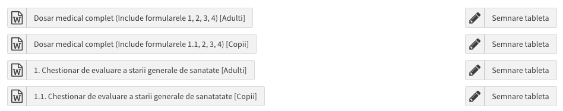

Despre Dr. Ardeleanu
Clinicile Dentare Dr. Ardeleanu https://clinicileardeleanu.ro/ reprezintă un reper important în domeniul stomatologic din România, oferind o gamă completă de servicii dentare de înaltă calitate la prețuri accesibile.
Fondată de Dr. Virginia Ardeleanu, rețeaua s-a extins rapid, având locații în orașe precum București, Giurgiu, Oltenița, Slobozia și Călărași. Clinicile sunt dotate cu tehnologie de ultimă generație, inclusiv tomografe computerizate și lasere dentare, asigurând astfel tratamente precise și eficiente. Un aspect inovator al clinicilor este conceptul "Dental Safari", https://clinicileardeleanu.ro/dental-safari/ destinat copiilor, care transformă vizitele la dentist într-o experiență plăcută și educativă prin gamificare. Rețeaua și-a extins amprenta teritorială, deschizând noi clinici continuând să ofere servicii stomatologice de calitate aproape de pacienți.
Dr. Ardeleanu se bazează și pe echipa sa medicală de elită. Profesionalismul, pregătirea constantă, experiența în spitale și practica privată sunt elemente esențiale care contribuie la calitatea serviciilor oferite. Fiecare medic se angajează să se îmbunătățească și să crească pentru a oferi cele mai bune servicii pacienților. Echipa medicală este compusă din peste 50 de medici supraspecializați, dedicați să ofere îngrijire personalizată și empatică fiecărui pacient.
În perioada 2021-2024, numărul de pacienți s-a dublat în fiecare an. Prețurile accesibile și serviciile rapide, contribuie la eliminarea barierelor în calea îngrijirii dentare de calitate. În 2024, clinicile Dr. Ardeleanu vor primi 12,000 de pacienți și vor efectua 50,000 de tratamente. Această combinație de inovație, accesibilitate și expertiză face din Clinicile Dr. Ardeleanu o alegere de încredere pentru îngrijirea dentară.
Valorile Dr.Ardeleanu s-au conturat în jurul unui angajament etic, menit să ofere servicii de stomatologie excelente la prețuri accesibile pentru întreaga familie. Dr. Ardeleanu este înțeles ca un doctor al comunității în care suntem prezenți.
Misiunea Dr. Ardeleanu este să extindă accesul la serviciile sale prin dezvoltarea la nivel național. Angajamentul nostru față de accesibilitate și îngrijire de calitate nu este limitat la locațiile existente, ci se extinde la toți românii, indiferent de locul în care locuiesc.
Importanța Funcției de Registrator Medical
Recepția reprezintă cartea de vizită a clinicii, fiind primul punct de contact între pacient și instituție. Modul în care personalul din recepție interacționează cu pacienții reflectă direct calitatea serviciilor oferite de clinică. Atitudinea, limbajul verbal și non-verbal, comportamentul și vestimentația registratorilor contribuie în mod esențial la formarea primei impresii a pacienților.
Dincolo de simpla funcție de centru de informații, personalul de la recepție joacă un rol crucial în comunicarea imaginii și a valorilor brandului Dr. Ardeleanu. Printr-un protocol bine structurat de întâmpinare, recepția facilitează stabilirea unei relații solide între pacient și clinică, asigurându-se că fiecare interacțiune este pozitivă și memorabilă.
Un limbaj formal, dar plin de interes și recunoștință, utilizat de la primul contact, transmite pacientului respectul și importanța pe care i le acordăm. Un mediu ambiant cald și prietenos, combinat cu un comportament dedicat și atent, sugerează personalizarea experienței pentru fiecare pacient în parte, pacientul percepe astfel că personalul recepției este acolo exclusiv pentru el.
Relația cu Pacientul
Relația de poziționare față de pacient trebuie să se bazeze pe înțelegere, confidențialitate, respect și empatie. Empatia nu înseamnă doar a asculta, ci și a manifesta căldură și a oferi soluții eficiente. Comunicarea cu pacientul trebuie să fie întotdeauna calmă, prietenoasă și orientată către rezolvarea nevoilor acestuia.
Indiferent de vârstă, gen, etnie sau situație financiară, fiecare pacient trebuie să fie tratat cu aceeași deschidere și acceptare. Confidențialitatea joacă un rol esențial în menținerea unei relații de încredere cu pacientul. Este absolut interzis să deschidem dialoguri despre patologiile unui pacient în prezența altor persoane, asigurându-le astfel că intimitatea și demnitatea fiecărui pacient sunt protejate.
Respectul trebuie să fie o valoare centrală atât în relația cu pacienții, cât și în relația cu colegii noștri. Expresiile precum "Te rog", "Mulțumesc" și "Iartă-mă" ar trebui să fie constant prezente în limbajul nostru, reflectând astfel o atitudine profesională și respectuoasă.
Concluzie
Funcția de Registrator Medical în cadrul recepției unei clinici dentare este deosebit de importantă, având un impact direct asupra satisfacției pacienților și asupra imaginii generale a clinicii. Prin cultivarea unei relații bazate pe empatie, confidențialitate și respect, registratorii medicali contribuie la crearea unei atmosfere pozitive și la consolidarea încrederii pacientului în serviciile oferite de clinică. Această atitudine profesională și grijulie nu doar că îmbunătățește experiența pacientului, dar și consolidează loialitatea acestuia față de clinică.
Calitățile și Abilitățile Necesare pentru un Registrator Medical
Funcția de Registrator Medical în cadrul unei clinici dentare implică un set divers de calități și abilități esențiale pentru asigurarea unei experiențe pozitive pentru pacienți și pentru susținerea eficienței operaționale a clinicii.
Empatie și Orientare către Pacient
Una dintre cele mai importante calități ale unui registrator medical este dorința de a ajuta și de a fi util. Interacțiunea zilnică cu pacienții din diverse categorii sociale și aflate în diferite stadii ale bolii necesită o capacitate profundă de empatie. Aceasta se manifestă prin căldură, ascultare activă și orientare către soluții, asigurându-se că fiecare pacient se simte înțeles și respectat.
Abilități de Comunicare
Registratorul Medical trebuie să posede abilități solide de comunicare, atât verbală, cât și scrisă. Ca prim punct de contact al pacienților cu clinica, este esențial ca acesta să ofere informații clare, concise și profesioniste. Nu este suficient să răspundă doar la întrebările de bază, ci trebuie să fie pregătit să ofere răspunsuri detaliate și corecte, într-o manieră accesibilă. Cunoașterea unei limbi străine reprezintă un avantaj semnificativ, facilitând comunicarea cu pacienții din diverse medii culturale.
Atitudine Prietenoasă și Empatică
Un Registrator Medical trebuie să aibă o atitudine constant prietenoasă și empatică, indiferent de situație. Zâmbetul autentic și abordarea pozitivă sunt cruciale, mai ales în situațiile în care pacienții se confruntă cu disconfort sau anxietate. În ciuda eventualelor provocări personale sau ale unei zile dificile, atitudinea registratorului medical trebuie să rămână constant profesionistă și primitoare.
Răbdare și Calm
Interacțiunea cu un public divers implică întâlnirea unor situații stresante sau provocatoare. Este crucial ca Registratorul Medical să își mențină calmul și să răspundă cu răbdare, indiferent de circumstanțe. Această atitudine contribuie semnificativ la menținerea unui mediu plăcut și profesionist în clinică.
Aspect Profesional
Ținuta și aspectul general ale Registratorului Medical trebuie să fie impecabile, reflectând profesionalismul clinicii. Uniforma clinicii conform ADC-UNF-01, părul aranjat și unghiile îngrijite sunt obligatorii conform pct 4. din procedura de ordine, igienă și securitate la locul de munca ADC - OIM -02, iar mediul de lucru, inclusiv zona recepției, trebuie să fie mereu curat și ordonat, în concordanță cu standardele de excelență ale clinicii.
Managementul Timpului, Multitasking
O zi obișnuită la recepție poate fi foarte aglomerată, implicând multiple sarcini ce necesită gestionare simultană, cum ar fi interacțiuni cu pacienți, apeluri telefonice, coordonarea programărilor, a corespondenței, etc.. În acest context, abilitățile de management al timpului și multitasking sunt esențiale. Registratorul Medical trebuie să-și prioritizeze eficient sarcinile și să își organizeze timpul astfel încât fiecare pacient să primească atenția necesară fără întârzieri.
Lucrul în Echipa și Proactivitate
Registratorul Medical funcționează ca un liant între pacient și ceilalți membri ai echipei medicale, fie că este vorba despre medici, asistenți, personal administrativ sau cadre de conducere. Atitudinea proactivă, combinată cu empatie și pozitivism, contribuie la crearea unei atmosfere plăcute și profesioniste în clinică, asigurând eficiența operațională și satisfacția pacienților. Colaborarea eficientă cu toți colegii este vitală pentru a asigura o experiență integrată și satisfăcătoare pentru pacient.
Cunoștințe de Contabilitate Primara și Utilizare a Calculatorului
Registratorul Medical trebuie să aibă cunoștințe generale de contabilitate, necesare pentru gestionarea corectă a plăților, utilizarea casei de marcat, gestiunea casieriei și menținerea evidențelor financiare primare din clinica. De asemenea, abilitățile de utilizare a calculatorului sunt indispensabile, incluzând competențe în utilizarea aplicațiilor interne specifice, cum ar fi SPSS și ERP.
Studii și Pregătire Profesională
De preferat, Registratorul Medical ar trebui să aibă studii medii sau superioare și o bună pregătire în utilizarea tehnologiilor moderne de lucru. Cunoștințele în acest domeniu îi permit să își desfășoare activitatea eficient și să contribuie activ la succesul clinicii.
Concluzie
Funcția de Registrator Medical într-o clinică dentară presupune un mix de abilități tehnice, interpersonale și de organizare. Dezvoltarea continuă a acestor competențe contribuie nu doar la eficiența operațională a clinicii, ci și la crearea unei experiențe pozitive și memorabile pentru fiecare pacient. Registratorul Medical este esențial pentru menținerea și îmbunătățirea reputației și succesului clinicii.
Programul de lucru și Relația cu Șeful Direct
Programul de lucru și Pontaje
- Programul de lucru este de 8 h/zi în ture: 09:00-17:00, respectiv 12:00-20:00, de luni până vineri, plus două sâmbete pe lună.
- Programul de lucru al zilelor de sâmbătă este 09:00-17:00 sau 10:00 -18:00, după caz.
- Orele suplimentare NU vor fi plătite, ci vor fi transformate în ore/zile libere stabilite de comun acord cu Coordonatorul Clinicii, în măsura în care nu se depășește norma legala de lunara de munca.
- Pontajul zilnic se efectuează în ERP.
- Concediul de odihnă se va anunța prin cerere scrisă de concediu, cu cel puțin o lună înainte.
Începerea programului:
- Registratorul Medical ajunge în clinică cu 15 minute de a începe programul;
- În cazul în care ajunge primul în Clinică, îndeplinește sarcinile de deschidere a Clinicii respectând regulile de securitate, conform procedurii ADC - OIM - 01.
- Ținuta și aspectul general ale Registratorului Medical trebuie să fie impecabile, părul aranjat și unghiile îngrijite conform pct 4. din procedura de ordine, igienă și securitate la locul de munca ADC - OIM -02,
- Va purta uniforma oferită de către companie in mod obligatoriu conform ADC-UNF-01.
- Se logheaza în ERP https://erp.clinicile-ardeleanu.ro și în SPSS https://sps.clinicile-ardeleanu.ro cu userul propriu; Fiecare coleg trebuie să lucreze pe user-ul aferent;
- Pornește echipamentului IT din cadrul recepției și se asigura de functionalitatea rețelei de internet, a echipamentelor IT, a casei de marcat și a POS-ului. În cazul unor defecțiuni, anunță coordonatorul clinicii;
- Se pontează de începutul programului în ERP;
- Menține zona recepției, ca pe un mediu mereu curat și ordonat, în concordanță cu standardele de excelență ale clinicii.
- Verifică în permanență calendarul programarilor pe ziua în curs și fac toate demersurile necesare pentru umplerea golurilor din program.
- Începe ziua cu confirmarea programarilor, responsabilitatea #1 din categoria vânzări.
- Îndeplinește activitățile de vânzări, operaționale și financiare în mod prompt si corect, așa cum acestea sunt descrise în acest manual.
- NU modifică programari la cererea personalului medical.
Terminarea programului/turei:
- La finalul programului, Registratorul Medical se va ponta de finalul programului în ERP.
- Se va deloga din SPSS și din ERP;
- Preda gestiunea casieriei. Verifica numerarul din casierie împreună cu colega ce schimbă tura; În cazurile în care lipsesc bani, aceștia vor fi puși de către registratorul medical în programul căruia se constată lipsa. Numerarul cash se depune în seif la închiderea programului.
- Îndeplinește sarcinile de inchidere a Clinicii respectând regulile de securitate, în cazul în care ajunge primul în Clinică, conform procedurii ADC - OIM - 01.
Relația cu șeful direct - Coordonatorul Clinicii:
(i) Registratorul Medical rezolva problemele apărute pe parcursul zilei, informând coordonatorul clinicii de orice situație importantă apărută, chiar dacă aceasta este rezolvată.
(ii) Anunță coordonatorul clinicii de orice reclamație sau problemă internă: discuții de interes cu pacienții, asistenții, și/sau medicii
(iii) Pentru orice întârziere, situație neprevăzută sau urgență apărută în timpul programului va fi anunțat coordonatorul clinicii;
(iv) Asigură respectarea deciziilor luate de Coordonatorul Clinicii;
(v) Îndeplinește și alte sarcini solicitate de Coordonatorul Clinicii, chiar dacă acestea nu au fost expres definite în Fișa Postului, sau în acest Manual, în limita competențelor deținute;
(i) Coordonatorul Clinicii verifică ținuta, uniforma și aspectul profesional al Registratorului Medical, care trebuie sa fie impecabile și conform procedurii.
(ii) Aprobă concediile solicitate de către Registratorul Medical. Aprobarea concediilor ( medicale, de odihnă sau fără plată) se va face astfel incat sa nu fie în concediu, în același timp, ambii Registratori Medicali. Aprobarea concediilor se va face cu informarea și aprobarea verbală și scrisă a superiorului direct și a departamentului HR.
Responsabilități și activități legate de activitatea de vanzare
Responsabilitate Generală de Vânzări: Oferă suport pacienților în vederea programării la diferite consultații și tratamente pentru satisfacția pacientului și creșterea vânzărilor clinicii. În cadrul procesului de comunicare și programare a pacienților Registratorul Medical este responsabil pentru contribuția la vânzările generale ale clinicii prin (i) contactarea leadurilor (pacienți potențiali/interesați de tratamentele clinicii) si (ii) promovarea activă a tratamentelor mai avansate și mai complete către pacienți. Acest lucru include identificarea oportunităților de upselling pentru servicii precum pachetele de prevenție tip 3x1 sau 6x1, stomatologia estetică, aparatele dentare moderne sau tratamentele restaurative avansate.
De asemenea registratorul medical trebuie să se documenteze înainte de a aborda pacienții îi să-și îmbunătățească permanent abilitățile de comunicare:
Recomandări generale:
Când contactați pacienții, vă recomandăm să:
- Ascultați cu atenție motivele pentru care solicită programare.
- Ascultați cu atenție motivele neprezentării sau anulării și să oferiți soluții flexibile pentru reprogramare.
- Concentrati-va pe o comunicare empatică și profesionistă.
- Prezentați ofertele și reducerile actuale, subliniind cum acestea pot face vizita la stomatolog mai accesibilă și avantajoasă pentru pacienți.
- Menționați îmbunătățirile echipei medicale și noile tehnologii disponibile, asigurând pacienții că oferim cele mai bune condiții pentru sănătatea lor dentară.
- Contactați din nou pe parcursul lunii, până la obținerea unei programări noi sau a unei rezoluții finale toți pacienții marcați cu sintagma („Nu răspunde”) sau („Revine”).
Prin aceste acțiuni, putem contribui împreună la creșterea gradului de retenție și satisfacție a pacienților noștri.
1. Confirmarea programarilor
Registratorul Medical inițiază apeluri către pacienți pentru confirmarea programarilor cu o zi înainte [24 ore înainte] pentru următoarele specializări: protetică, chirurgie - implantologie, endodonție și estetică.
2. Gestionarea leadurilor și conversia acestora în programari [KPI 1]
Această procedură are ca scop optimizarea procesului de gestionare a leadurilor generate din campaniile de social media sau website, prin contactarea rapidă și eficientă a acestora, în vederea creșterii ratei de conversie în programări. Registratorul medical se asigură permanent că toate leadurile au fost contactate în termen de 24 de ore și că încercările de contact au fost documentate corespunzător.
Definitia Leadurilor:
Ce sunt Leadurile? Leadurile reprezintă potențiali pacienți care și-au exprimat interesul față de serviciile noastre prin intermediul platformelor de social media, fie prin completarea unui formular de contact, fie prin trimiterea unui mesaj direct sau email, sau prin interacțiuni relevante (cum ar fi comentarii sau solicitări de informații).
Leadurile sunt informații despre pacienți care conțin: (i) Nume, (ii) Prenume, (iii) Număr de telefon, și/sau (iv) Adresa de Email.
Leadurile sunt oportunități valoroase pentru a transforma interesul inițial în programări efective și, ulterior, în pacienți fideli.
Gestionarea promptă și profesională a acestor leaduri este esențială pentru a construi relații de încredere și pentru a asigura o experiență pozitivă încă de la primul contact.
Obiective:
(i) Asigurarea contactării leadurilor în maximum 24 de ore de la generare, pentru a crește șansele de conversie în programări.
(ii) Crearea unui proces continuu de urmărire a leadurilor care nu răspund sau solicită revenire, până la obținerea unei rezoluții finale.
(iii) Optimizarea programului medicilor prin obținerea unui flux constant de programări noi.
(iv) Îmbunătățirea permanentă a activității de contactare și conversie a leadurilor în programari.
Procedura de Contactare a Leadurilor:
Preluarea leadurilor: Registratorii Medicali și sau coordonatorii de pacienți vor verifica zilnic fișierul „FB_adds_campaigns” pentru a identifica leadurile generate din campaniile de social media. Toate leadurile trebuie să fie contactate în termen de 24 de ore de la apariția lor în fișier.
Contactarea leadurilor:
(i) Se va iniția un apel telefonic către fiecare lead în cel mai scurt timp posibil, dar nu mai târziu de 24 de ore.
(ii) Leadurile care nu răspund sau care cer revenirea („Nu răspunde” sau „Revine”) vor fi contactate de mai multe ori, la intervale rezonabile și diferite până la obținerea unei programări sau a unei rezoluții finale (imposibilitatea de conversie).
Documentarea încercărilor de contact: Fiecare apel va fi înregistrat în fișierul „FB_adds_campaigns”, specificând data, ora și rezoluția finală a apelului (programare realizată, nu răspunde, solicită revenire, neinteresat etc.).
Exemple de abordări telefonice:
1. Apel inițial: „Bună ziua, numele meu este [nume] de la Clinica [nume clinică]. Vă sun în legătură cu solicitarea dumneavoastră de pe pagina noastră de Facebook/Instagram etc. pentru o consultație stomatologică. Vă pot ajuta acum să programăm o vizită la medicul nostru?”
2. Lead care nu răspunde: „Bună ziua, sunt [nume] de la Clinica [nume clinică]. Am încercat să vă contactăm în legătură cu solicitarea dumneavoastră pentru o consultație stomatologică. Puteți să ne spuneți când ar fi convenabil să revenim sau dacă doriți să stabilim acum o programare?”
3. Lead care solicită revenire: „Bună ziua, [nume pacient]. Revin cu un apel din partea Clinicii [nume clinică], așa cum ați solicitat, pentru a discuta despre stabilirea unei programări. Este acum un moment potrivit să vă ajutăm cu detalii și să facem programarea?”
4. Lead indecis: „Bună ziua, sunt [nume] de la Clinica [nume clinică]. Înțeleg că sunteți interesat de o consultație, însă poate aveți unele întrebări. Vă pot oferi mai multe detalii despre opțiunile noastre de tratament și despre consultație.”
5. Lead reticent: „Bună ziua, sunt [nume] de la Clinica [nume clinică]. Înțeleg că nu sunteți încă sigur dacă doriți să faceți o programare, dar suntem aici să vă ajutăm cu orice informații care vă pot ajuta să luați decizia corectă pentru sănătatea dumneavoastră dentară.”
6. Follow-up pentru lead care a refuzat inițial: „Bună ziua, [nume pacient]. Revin cu un apel din partea Clinicii [nume clinică]. Chiar dacă nu ați dorit să faceți o programare inițial, ne-ar plăcea să vă oferim o oportunitate pentru o consultație gratuită sau un discount pentru o primă vizită sau să vă comunicăm promoțiile noastre actuale, în cazul în care v-ați răzgândit.”
Raportare: Numărul efectiv de pacienți programați din procesul de contactare telefonica a leadurilor este monitorizat și raportat zilnic, saptamanal, dar și lunar, de către colegii din departamentul de controlling (business intelligence).
2. Reducerea Ratei Anulărilor/Neprezentarilor [KPI 2]
Această procedură are ca scop optimizarea procesului de gestionare a solicitărilor de reprogramare sau anulare a vizitelor în clinici urmărind reducerea la minim a acestora.
Obiective:
(i) Gestionarea eficientă a pacienților care nu s-au prezentat la programare sau au anulat programarea.
(ii) Optimizarea programului medicilor și recuperarea pacienților pentru a asigura o conversie maximă în programări ulterioare.
(iii) Îmbunătățirea continuă a comunicării active cu pacienții.
(iv) Actualizarea imediată a informațiilor în sistemul SPSS.
(v) Informarea corectă și la timp a medicilor cu privire la anularea programării sau a neprezentări pacienților la programare.
Procedura de contactare a pacienților care au anulat sau nu s-au prezentat:
Preluarea neprezentărilor/anulărilor: Registratorii Medicali vor verifica zilnic fișierul „Neprezentări” pentru a identifica pacienții care nu s-au prezentat la programare sau au anulat.
Contactarea neprezentărilor/anulărilor:
(i) Se va iniția un apel telefonic către fiecare lead în 15 minute de la neprezentarea la programare.
(ii) Se vor iniția apeluri telefonice în cel mai scurt timp posibil de la înregistrarea lor în fișierul „Neprezentări” până la obținerea unei rezoluții finale.
Documentarea încercărilor de contact: Fiecare apel trebuie înregistrat în fișierul „Neprezentări”, incluzând data, ora și rezultatul apelului (programare efectuată, nu răspunde, solicită revenire etc.).
Exemple de abordări telefonice:
1. Primul apel după neprezentare: „Bună ziua, sunt [nume] de la Clinica [nume clinică]. Am observat că nu ați reușit să vă prezentați la programarea recentă. Putem stabili împreună un alt interval convenabil pentru dumneavoastră?”
2. Primul apel după anulare: „Bună ziua, sunt [nume] de la Clinica [nume clinică]. Îmi pare rău că ați fost nevoit să anulați programarea. Vă pot ajuta să reprogramăm vizita dumneavoastră într-un interval mai convenabil?”
3. Follow-up pentru „Nu răspunde” după neprezentare: „Bună ziua, am încercat să vă contactăm în legătură cu programarea ratată. Vă rugăm să ne contactați pentru a stabili un nou interval. Este important să nu amânați prea mult vizita la medicul stomatolog.”
4. Follow-up pentru „Revine” după anulare: „Bună ziua, revin cu un apel pentru a vă ajuta să reprogramăm vizita la clinica noastră. Ați putea să-mi spuneți când ar fi cel mai potrivit moment pentru dumneavoastră?”
5. Apel pentru pacient reticent: „Bună ziua, am observat că ați anulat recent programarea. Înțeleg că pot interveni situații neprevăzute, dar este foarte important să reveniți pentru control. Pot să vă ofer detalii despre beneficiile menținerii sănătății dentare prin vizite regulate.”
6. Apel final pentru pacient necontactabil: „Bună ziua, am încercat să vă contactăm de mai multe ori pentru a reprograma vizita dumneavoastră. Vă rugăm să ne contactați la acest număr sau să ne lăsați un mesaj pentru a găsi o soluție potrivită.”
Modul de înregistrare în SPSS a anulării unei programări se face diferit în funcție de situație:
Daca pacientul nu se prezinta (neprezentare) iar registratorul medical nu reușește să-l recupereze prin agrearea unei noi programari, atunci programarea se anulează în SPSS.
In cazul în care pacientul nu se prezinta (neprezentare) insa registratorul reuseste sa il recupereze prin intermediul unei noi programari viitoare, atunci programarea NU se anulează în SPSS ci se modifica data programării. Acest caz, nu se cuantifica la numărul de anulari din luna.
Mai multe detalii cu privire la anularea programarilor în SPSS, găsiți într-un tutorial video din secțiunea documente ERP.
Raportare: Numărul efectiv de pacienți programați/recuperati din procesul de contactare telefonica a celor care au anulat o programare sau nu s-au prezenta la acesta, este monitorizat și raportat în fiecare saptamana dar și lunar, de către colegii din departamentul de controlling (business intelligence).
3. Creșterea Ratei de Succes a aducerii pacienților în clinică în procesul de Recall 180 [KPI 3]
Această procedură are scopul de a-i invita pe pacienți la un control gratuit, cu intenția de a-i readuce în clinică pentru upselling și creșterea Valorii pe Termen Lung (LTV) a pacientului. Registratorul Medical este responsabil pentru gestionarea procesului de recall al pacienților, care implică contactarea telefonică a tuturor pacienților existenți ai clinicii care nu au mai vizitat clinica în ultimele 180 zile.
Obiective:
(i) Contactarea pacienților la 6 luni de la ultima vizită în clinică, în vederea programării pentru controlul periodic.
(ii) Optimizarea fluxului de pacienți și a programului medicilor.
(iii) Urmărirea pacientului până la obținerea unei programări sau până la concluzionarea că pacientul nu dorește o nouă vizită.
Procedura de contactare a Pacienților în Campania de Recall:
1. Preluarea pacienților din fișierul „Recall_2024”: Fișierul de lucru este completat de către specialiștii din departamentul de controlling în primele 2-3 zile ale fiecărei luni. Coordonatorii și /sau registratorii medicali vor verifica acest fișier pentru a identifica pacienții ce urmează să fie rechemați la control.
2. Contactarea pacienților: Toți pacienții trebuie contactați în prima săptămână a lunii, în vederea rechemării la control stomatologic. Dacă pacienții nu răspund („Nu răspunde”) sau solicită revenire („Revine”), aceștia vor fi contactați din nou pe parcursul lunii, până la obținerea unei programări sau a unei rezoluții finale.
3. Documentarea încercărilor de contact: Fiecare apel va fi înregistrat în fișierul „Recall_2024”, specificând data, ora și rezultatul apelului (programare realizată, nu răspunde, solicită revenire etc.).
Exemple de Abordări Telefonice:
1. Primul apel: „Bună ziua, sunt [nume] de la Clinica [nume clinică]. Vă sun pentru a vă reaminti că a trecut deja 6 luni de la ultima dumneavoastră vizită. Ar fi un moment potrivit să vă programați pentru controlul periodic?”
2. Apel în caz de „Nu răspunde”: „Bună ziua, sunt [nume] de la Clinica [nume clinică]. Am încercat să vă contactăm pentru a stabili o nouă programare la medicul nostru, având în vedere că a trecut 6 luni de la ultima dumneavoastră vizită. Când ar fi convenabil să revenim cu un apel?”
3. Apel după solicitare de revenire: „Bună ziua, [nume pacient]. Revin cu un apel, așa cum am stabilit, pentru a discuta despre programarea dumneavoastră pentru controlul stomatologic. Este acum un moment potrivit să programăm vizita?”
4. Lead indecis: „Bună ziua, sunt [nume] de la Clinica [nume clinică]. Vă reamintesc că este recomandat să veniți la control la fiecare 6 luni pentru a preveni probleme dentare. Vă pot oferi mai multe detalii despre procedurile noastre de prevenție și beneficiile unui control regulat.”
5. Lead reticent: „Bună ziua, [nume pacient], înțeleg că poate nu ați avut timp până acum pentru o vizită, dar este important să menținem sănătatea dentară. Vă putem oferi un interval flexibil pentru programare, în funcție de disponibilitatea dumneavoastră.”
6. Follow-up pentru pacient necontactabil: „Bună ziua, [nume pacient], am încercat să vă contactăm de câteva ori pentru a discuta despre programarea pentru controlul periodic. Vă rugăm să ne contactați la acest număr pentru a stabili o nouă vizită, sau ne puteți scrie un mesaj cu preferințele dumneavoastră.”
Raportare: Numărul efectiv de pacienți programați în clinică prin procesul de Recall 180 este monitorizat și raportat în fiecare saptamana dar și lunar, de către colegii din departamentul de controlling (business intelligence).
4. Creșterea numărului de Recenzii de la pacienți [KPI 4]
Această procedură are scopul de a încuraja pacienții să ofere recenzii și feedback despre experiența lor prin răspunsul la SMS-ul trimis de Dr. Ardeleanu la momentul plății tratamentelor realizate în clinică.
Obiective:
(i) Creșterea numărului de recenzii pozitive din partea pacienților pe platformele dedicate de feedback prin SMS. Recenziile pozitive contribuie la consolidarea imaginii clinicii și atragerea de noi pacienți.
(ii) Îmbunătățirea continuă a calității serviciilor oferite pe baza feedback-ului primit.
(iii) Creșterea vizibilității și credibilității clinicii pe platformele de recenzii.
(iv) Fidelizarea pacienților și consolidarea unei relații de încredere cu aceștia.
(v) Încurajarea echipei medicale să ofere servicii de înaltă calitate pentru a obține recenzii pozitive.
Procedura de abordare a Pacienților în vederea Creșterii numărului de Recenzii de la Pacienți:
Registratorii medicali trebuie să abordeze pacienții la finalul fiecărei vizite pentru a-i încuraja să lase o recenzie.
După fiecare vizită în clinică, pacienții vor primi un mesaj SMS de la clinica Dr. Ardeleanu cu un link direct către platformele de feedback și vor fi încurajați să ofere recenzii despre experiența lor.
În mod special vor fi încurajați pacienții mulțumiți să își împărtășească experiența pozitivă, pentru a putea valorifica permanent feedback-ul constructiv.
Exemple de abordări pentru creșterea numărului de recenzii:
Abordare prietenoasă și directă la finalul vizitei: „Doamnă/Domnule [Nume pacient], ne bucurăm că ați fost astăzi cu noi. Ne-ar ajuta foarte mult dacă ați putea să ne oferiți o recenzie pe Google despre experiența dvs. in clinica noastră. Este o modalitate prin care ne putem asigura că ne ridicăm mereu la nivelul așteptărilor dvs.!”
Abordare personalizată: „Suntem foarte încântați că ați avut o experiență plăcută astăzi. Dacă aveți câteva momente libere, ne-ar bucura o recenzie din partea dvs. – ne-ar ajuta să îmbunătățim și mai mult serviciile oferite tuturor pacienților noștri!”
Abordare prin SMS: „Vă mulțumim că ne-ați vizitat astăzi! Dacă ați fost mulțumit(ă) de serviciile noastre, v-am trimis un SMS prin care puteți lăsa o recenzie. Feedback-ul dvs. este foarte important pentru noi!”
Abordare de fidelizare „Ne dorim să avem grijă de pacienții noștri fideli și apreciem mult opiniile dvs. Orice recenzie sau feedback pe care ni-l puteți oferi ne ajută să îmbunătățim continuu serviciile.”
Abordare de recunoaștere: „Vă mulțumim pentru vizita dvs.! Dacă ați fost mulțumit(ă) de tratamentul și echipa noastră, v-am fi recunoscători dacă ați putea lăsa o recenzie pentru a-i ajuta și pe alți pacienți să ia decizii informate.”
Abordare empatică: „Ne bucurăm că am putut să vă ajutăm astăzi. Dacă vă simțiți confortabil, ne-ar plăcea să auzim părerea dvs. printr-o recenzie. Opiniile dvs. ne ajută să ne îmbunătățim constant.”
Raportare: Numărul efectiv de recenzii per clinică este raportat în fiecare saptamana dar și lunar, de către colegii din departamentul de controlling (business intelligence).
Alte Obiective și responsabilități de Vanzari:
5. Creșterea Ratei de Succes a aducerii pacienților în clinică în procesul de Recall „La Mulți Ani”, cu acordare voucher
Această procedură are scopul de a crește loialitatea pacienților și de a consolida relația cu aceștia printr-o abordare personalizată, oferindu-le un gest de apreciere cu ocazia zilei de naștere. Registratorul Medical este responsabil pentru gestionarea procesului de contactare a pacienților aniversați, prin care le transmite urări de „La Mulți Ani” și le oferă un voucher pentru servicii stomatologice.
Obiective:
(i) Crearea unei experiențe pozitive pentru pacienți printr-o abordare personalizată.
(ii) Stimularea revenirii pacienților în clinică prin utilizarea voucherului oferit.
(iii) Creșterea loialității pacienților și a valorii pe termen lung (LTV).
Procedura de Contactare a Pacienților pentru Recall „La Mulți Ani”:
Preluarea listei aniversaților: lista pacienților care urmează să fie aniversați, este primită de la Departamentul de Controlling/BI, la începutul fiecărei luni pentru luna în curs. Lista va include numele pacientului, numărul de telefon și data nașterii.
Contactarea telefonică a pacienților: Pacienții vor fi contactați telefonic în ziua aniversării lor. Dacă ziua de naștere pica într-o zi nelucratoare, pacienții vor fi sunati inainte. Dacă pacientul nu răspunde („Nu răspunde”), se va încerca un al doilea apel în aceeași zi, la o distanța de 3-4 ore.
Transmiterea urărilor și a informațiilor despre voucher: Registratorul Medical va transmite pacientului un mesaj personalizat, urându-i „La Mulți Ani” și informandu-l despre voucherul aniversar: Valoarea voucherului: 100 de lei. [valoarea este stabilita anual, de către echipa de management]. Utilizarea voucherului: poate fi folosit pentru orice tratament stomatologic în termen de 30 de zile de la emitere.
Documentarea contactelor: Fiecare apel va fi înregistrat în fișierul „Recall_La_Mulți_Ani”, indicând data apelului, rezultatul acestuia (apel reușit, pacient necontactabil) și eventualele observații (ex. preferințe privind utilizarea voucherului).
Exemple de Abordări Telefonice:
1. Primul apel: „Bună ziua, domnule/doamnă [Nume Pacient], Sunt [Nume Registrator] de la Clinică [Nume Clinică]. Vă sun cu ocazia zilei dumneavoastră de naștere pentru a vă spune La Mulți Ani! și pentru a vă oferi un mic cadou din partea clinicii noastre – un voucher în valoare de 100 de lei, pe care îl puteți folosi la următoarea vizită. Cum vi se pare această surpriză?”
2. Apel în caz de „Nu răspunde”: „Bună ziua, sunt [Nume Registrator] de la Clinica [Nume Clinică]. V-am sunat pentru a vă ura La Mulți Ani cu ocazia zilei dumneavoastră de naștere și pentru a vă informa despre voucherul aniversar pe care vi-l oferim. Vă rog să ne contactați la acest număr când aveți disponibilitate, pentru mai multe detalii.”
3. Pacient răspunde și confirmă primirea voucherului: „Mulțumim că ați răspuns! Voucherul dumneavoastră este valabil timp de 30 de zile și îl puteți folosi pentru orice tratament stomatologic. Dacă doriți, vă pot programa acum pentru următoarea vizită sau puteți reveni când aveți disponibilitate.,,
4. Apel pentru pacient necontactabil după mai multe încercări: „Bună ziua, domnule/doamnă [Nume Pacient]. Am încercat să vă contactăm pentru a vă transmite urările noastre de ziua dumneavoastră și pentru a vă informa despre voucherul aniversar oferit din partea clinicii. Voucherul este valabil 30 de zile, iar pentru detalii sau programări vă rugăm să ne contactați la numărul [număr clinică].”
Voucherul va fi înregistrat în contul pacientului [avansuri] în softul clinicii pentru a putea fi utilizat. Registratorii Medicali vor raporta săptămânal coordonatorului progresul campaniei și feedback-ul primit de la pacienți. Această procedură ajută la menținerea unei relații apropiate cu pacienții, consolidand imaginea clinicii și promovând loialitatea.
Raportare: Numărul efectiv de pacienți programați în clinică prin procesul de Recall “La Mulți Ani” este este monitorizat raportat în fiecare saptamana dar și lunar, de către colegii din departamentul de controlling (business intelligence).
5. Creșterea Ratei de Programări Viitoare
Această procedură are scopul de a asigura creșterea ratei de retenție și optimizarea programului clinicii prin garantarea faptului că toți pacienții ar trebui sa aiba înregistrată o programare viitoare în SPSS, înainte de a părăsi clinica. Astfel, se optimizează programul de lucru al medicilor și se îmbunătățește satisfacția pacienților, contribuind la o gestionare eficientă a fluxului de pacienți.
Obiective:
(i)Asigurarea că fiecare pacient părăsește clinica cu o programare viitoare activă în calendarul SPSS.
(ii)Creșterea gradului de reținere a pacienților și a fidelizării acestora.
(iii)Optimizarea programului medicilor prin planificarea din timp a vizitelor viitoare.
(iv)Crearea unui flux eficient de comunicare între registratorii medicali, medici și coordonatorii de pacienți/clinică pentru gestionarea programărilor viitoare.
Procedura de abordare a Pacienților în Procesul de efectuare a programărilor viitoare:
Registratorii medicali trebuie să se asigure că fiecare pacient, înainte de a părăsi clinica, are înregistrată o programare viitoare activă în sistemul SPSS.
În cazul în care constată că un pacient nu are o programare viitoare activă zn SPSS, registratorul va contacta medicul, coordonatorul de pacienți sau coordonatorul clinicii pentru a îi informa că pacientul nu are o programare viitoare în soft.
Registratorul medical va obține informații, recomandări de la echipa medicală și/sau coordonatorul de pacienți/clinică pentru a realiza o programare viitoare pacienților care au părăsit cabinetul fără a avea înregistrată în soft o programare viitoare..
Pacienții care refuză o programare viitoare vor fi înregistrați în sistem cu o notă specifică și vor fi recontactați conform unui plan de urmărire.
Exemple de abordări utilizate pentru efectuarea unei programări viitoare:
Abordare directă: „Doamna/ Domnule [Nume pacient], pentru a vă menține sănătatea orală la cel mai înalt nivel, vă recomandăm să programați următoarea vizită. Când considerați că ar fi oportun pentru dvs. să reveniți?”
Abordare preventivă: „Ca să evităm orice disconfort viitor, medicul nostru sugerează să reveniți pentru o verificare în [X] luni. Pot să vă fac acum o programare?”
Abordare de fidelizare: „Pentru pacienții noștri fideli, ne dorim să oferim programări în cele mai convenabile intervale. Ce spuneți dacă stabilim împreună acum următoarea dvs. programare ?”
Abordare promotoare: „Avem câteva locuri disponibile în luna/perioada/lunile următoare și vă putem asigura că veți beneficia de cel mai bun tratament. Vă pot programa acum?”
Abordare de urmărire: „Pentru a vă asigura că tratamentul se desfășoară conform planului, este important să reveniți în [X] zile/luni/săptămâni. Pot să confirm programarea dvs. acum?”
Abordare personalizată: „Medicul dvs. a sugerat să reveniți pentru o verificare preventivă. Să vedem împreună ce dată se potrivește cel mai bine pentru dvs.!”
Raportare: Rata de programari viitoare se calculeaza in procent, ca fiind numărul de programari din luna viitoare per total programari din luna precedenta. Acest indicator este raportat în lunar, de către colegii din departamentul de controlling (business intelligence).
6. Vanzari pe credit
Această procedură are scopul de a instrui registratorii medicali pentru a prezenta pacienților opțiunea de finanțare prin intermediul creditelor bancare pentru serviciile stomatologice, facilitând accesul la tratamente de calitate.
Registratorul medical se implică activ în vânzarea tuturor serviciilor medicale promovând vânzarea acestora prin accesarea creditelor bancare de către pacient. Promovează activ în rândul pacienților soluțiile financiare propuse de partenerii agreați din sistemul bancar.
Obiective:
(i) Creșterea accesibilității tratamentelor stomatologice prin oferirea unor soluții de plată flexibile.
(ii) Informarea eficientă a pacienților despre opțiunile de finanțare disponibile.
(iii) Convingerea pacienților să acceseze serviciile stomatologice prin credite pentru a beneficia de tratamentele necesare fără amânare.
(iv) Creșterea numărului de pacienți care optează pentru soluții de finanțare.
Procedura:
Asistență informativă:
(i) Registratorul medical informează toți pacienții că pot beneficia de servicii stomatologice prin accesarea creditelor bancare direct în clinică.
(ii) Registratorul medical se asigură că în urma discuțiilor de evaluare CT și a altor vizite la medicii specialiști care recomandă tratamente cu costuri ridicate pacientul a fost informat de către medic cu privire la opțiunile de tratament și costuri și că pot accesa aceste servicii prin credite bancare.
(iii) Registratorul prezintă pacienților detalii despre partenerii bancari agreați de clinică și avantajele fiecărei opțiuni de creditare.
(iv) Pune la dispoziția pacientului broșuri informative și contacte utile pentru fiecare partener financiar.
Asistență Activă:
(i) Registratorul medical explică pașii principali ai procesului de aplicare pentru un credit bancar, clarificând detalii despre documentele necesare și durata procesului.
(ii) În cazul în care pacientul este interesat, registratorul medical poate facilita legătura directă între pacient și reprezentantul bancar pentru mai multe informații.
(iii) În cazul în care pacientul este interesat realizează aplicația în vederea accesarii creditului bancar.
(iv) Dacă a fost aprobată creditarea informează pacientul, medicul curant și coordonatorul clinicii/de pacienți.
(v) Înregistrează valoarea creditului ca avans în SPSS.
Registratorii medicali se vor asigura că promovarea opțiunilor de finanțare este realizată într-o manieră etică și informativă, conform standardelor clinicii.
Exemple de abordare a pacienților:
Abordare informativă: „Știm că tratamentele stomatologice pot fi o investiție importantă. Avem opțiuni de finanțare prin intermediul unui credit, astfel încât să puteți începe tratamentul imediat și să achitați treptat. Chiar acum vă pot oferi mai multe detalii.”
Abordare empatică: „Înțelegem că unele tratamente pot avea un cost mai mare, însă avem soluții flexibile de finanțare prin bănci partenere, astfel încât să nu fie nevoie să amânați tratamentul. Aș putea să vă prezint chiar acum aceste opțiuni. Creditele se pot accesa direct în clinică în baza cărții de identitate.”
Abordare axată pe beneficii: „Cu un credit bancar, puteți beneficia de tratamentul stomatologic complet acum și să plătiți ulterior în rate convenabile. Așa vă asigurați că sănătatea dentară nu mai este amânată.Chiar acum vă pot oferi mai multe detalii.,,
Abordare pentru eliminarea îndoielilor: „Mulți dintre pacienții noștri aleg să acceseze credite pentru a beneficia imediat de tratamente. Este o soluție sigură și convenabilă. Ați dori să discutăm cum funcționează?”
Abordare personalizată: „Pentru nevoile dvs. dentare specifice, opțiunile de finanțare prin credit sunt o modalitate excelentă de a accesa tratamentele fără stres financiar imediat. Vă pot oferi mai multe informații despre cum puteți aplica?”
Abordare convingătoare: „Finanțarea prin credit este o soluție simplă și accesibilă, astfel încât să nu fie nevoie să faceți compromisuri pentru sănătatea dvs. dentară. Aș putea să vă arăt pașii pentru a accesa acest serviciu?”
7. Creșterea Valorii pe Termen Lung (LTV)
Registratorul Medical va interacționa cu pacienții pentru a-i informa cu privire la beneficiile acestor tratamente, va oferi informații și îi va încuraja să ia în considerare aceste opțiuni pentru îngrijirea lor dentară. Eficacitatea acestor eforturi de vânzări și upselling va fi măsurată prin creșterea Valorii pe Termen Lung (LTV) a pacientului mediu al clinicii.
Acest indicator este raportat în lunar, per canal (și nu per pacient) de către colegii din departamentul de controlling (business intelligence).
Responsabilități și activități legate de activitatea operațională
1. Întâmpinarea pacienților
Registratorul Medical întâmpină pacienții cu o atitudine caldă și prietenoasă, îi îndrumă către sală de așteptare sau cabinetul medical corespunzător.
2. Gestionarea apelurilor telefonice și a corespondenței electronice
Răspunde și inițiază (i) apeluri telefonice și (ii) mesaje electronice, oferind informații despre serviciile medicale ale clinicii oferind suport în vederea programării la diferite consultații și investigații pentru satisfacția pacientului și creșterea vânzărilor clinicii.
3. Administrarea corespondenței
Menține relația cu furnizorii și verifică termenele de livrare pentru a asigura primirea / predarea în timp util a corespondenței. Realizează recepția livrărilor, pachetelor și a corespondenței primite și le direcționează către destinatari în timp util;
4. Identificarea formală a pacienților și gestionarea CNP-ului
Identificarea legală a pacientului prin verificarea actului de identitate și înregistrarea corectă a Codului Numeric Personal (CNP) este o condiție obligatorie pentru realizarea tuturor actelor medicale. Completarea CNP-ului în SPSS:
- validează profilul pacientului.
- deblochează generarea documentelor de onboarding digital;
Nerespectarea acestui flux expune clinică la risc medico-legal și blocaje operaționale.
5. Gestionarea programărilor prin telefon (pre-onboarding, programarea telefonică înaintea primei vizite în clinică)
Realizează programările pentru consultații și tratamentele stomatologice prin telefon direct în sistemul SPSS, utilizând câmpurile obligatorii cerute de sistem pentru Profilul Pacientului
| Responsabilitate | Modalitate | Rezultat așteptat |
|---|---|---|
| Introducerea datelor preliminare obligatorii |
|
Informațiile sunt introduse corect în SPSS, acestea fiind necesare pentru realizarea primei programari. Completarea profilului complet al pacientului se va face în etapa II, de onboarding la vizita în clinică. |
| Reamintirea aducerii actului de identitate | În cadrul discuției telefonice pentru prima programare, se menționează explicit că fără act de identitate nu pot fi semnate documentele medicale și nu se pot efectua manopere medicale. | Pacientul se prezintă în clinică cu CI/pașaport/permis auto (sau certificat de naștere pentru minori) care conține CNP. |
6. Gestionarea programărilor direct în clinica, - onboarding digital
Asigură înregistrarea digitală a pacientului prin completarea și semnarea de către acesta a “Dosarului Medical Complet” direct de pe tabletă.
In secțiunea SPSS „Formulare personalizate” regasiti urmatoarele formulare de Onboarding Digital, necesare pentru completarea Dosarului Medical Complet al Pacientului:
- Dosar medical complet (Include formularele 1, 2, 3, 4) [Adulți]
- Dosar medical complet (Include formularele 1.1, 2, 3, 4) [Copii]

- Formularele digitale de onboarding vor fi trimise spre completare și semnare pe tableta direct de către pacient.
- Activitatea de trimitere pe tableta se efectuează de către registratorii medicali, numai după completarea CNP-ului.
- Formularele se vor completa automat cu datele pacientului, care vor bifa opțiunile [DA/NU] și vor semna digital direct pe tabletă.
- Pentru pacienții noi, după crearea profilului pacientului în SPSS [vezi punctul 4 de mai sus], pacienți vor completa pe tableta, formularul de Dosar Medical Complet [Adulți/Copii], versiunea Adulți sau Copii, care consolidează la un loc toate informațiile legate de: (i) Istoric medical, (ii) Acordul pacientului informat, (iii) Consimtamant pentru proceduri radiologice, și (iv) Nota GDPR.
- Pacienții vor marca pe tableta doar acolo unde răspunsul este <DA>. Sistemul preia implicit răspunsul <NU> la fiecare întrebare. Aceasta automatizare scurtează timpul petrecut de pacient pentru completarea răspunsurilor pe tableta, și trebuie comunicat pacientului la începerea procesului de onboarding de către registratorul medical.
Dosarul Medical Complet [Adulți/Copii] este obligatoriu sa fie completat la prima vizită a pacientului în clinica și, odată semnat, va fi arhivat digital în SPSS, la secțiunea "Documente" pentru fiecare pacient. Mai multe detalii cu privire la completarea Dosarul Medical Complet [Adulți/Copii] găsiți într-un tutorial video din secțiunea documente ERP.
Referitor la identificarea formală a pacienților și gestionarea CNP-ului în etapa de onboarding, registratorul medical va proceda în felul următor:
- Solicitare și autentificare act de identitate: Registratorul primește documentul și compară datele deja existente în sistem.
- Introducerea CNP-ului în SPSS: Registratorul introduce cu grija cifrele CNP-ului, si face o verificare manuala pentru conformitate.
- Deblocarea documentelor de onboarding digital: Dacă CNP-ul lipsește, documentele de onboarding se genereaza cu CNP valoare zero. În acest caz, documentele de onboarding au valoarea nulă.
- Gestionarea excepțiilor
- Pacient fără act – se accepta pacientul doar în următoarele condiții cumulative:
- motive dovedite excepționale;
- pacientul trimite o copie în clinica în maxim 24 de ore;
- prezentarea documentului în original la următoarea vizita/programare.
- consemnarea incidentului la Notițe în SPSS de către registrator.
- Minori – se folosește certificatul de naștere și/sau CNP-ul tutorelui se notează suplimentar la consimțământ.
- Erori de CNP detectate ulterior – se corectează numai cu actul original prezent și se consemnează incidentul la Notițe în SPSS de către registrator.
- Pacient fără act – se accepta pacientul doar în următoarele condiții cumulative:
CNP-ul este dată cu caracter special. Registratorul: (i) vizualizează CNP-ul doar în scop medical operațional; (ii) nu comunica CNP-ul niciunui terț; (iii) documentele se arhivează digital în secțiunea „Documente” din SPSS, cu acces controlat .
Coordonatorul de clinică realizeaza zilnic, un audit aleatoriu pentru un număr de pacienți noi înregistrați în sistem, pentru corectitudine introducere CNP.
7. Gestionarea Consimțămintelor Medicale
Obține semnătura pacienților pe “Consimțămintele Medicale” necesare conform planurilor de tratament, precum și arhivarea acestora în mod fizic (în cazul chirurgiei și implantologiei).
După semnarea formularului de onboarding digital Dosar Medical Complet, pacientul va continua semnarea de Consimtamintele Medicale specifice, conform planului de tratament.
În secțiunea SPSS „Formulare personalizate” regasiti următoarele formulare tip Consimtaminte Medicale:
- Consimțământ informat privind realizarea tratamentelor chirurgicale
- Consimțământ informat privind procedura de sedare conștientă pentru intervențiile stomatologice și de chirurgie orală
- Consimțământ informat privind realizarea tratamentelor ortodontice
- Consimțământ informat pentru tratamente și proceduri endodontice
- Consimțământ informat pentru tratamente și proceduri parodontale
- Consimțământ informat privind realizarea tratamentelor cu toxină botulinică
- Consimțământ informat privind realizarea tratamentelor cu acid hialuronic
- Consimțământ informat referitor la sedarea prin protoxid de azot
- Consimțământ informat privind realizarea de proceduri medicale de Post Endodontie
- Consimțământ informat privind realizarea tratamentelor protetice
- Consimțământ informat privind realizarea de tratamente de Mezoterapie cu PRF
- Consimțământ pentru fotografii realizate în clinică
De exemplu, pentru un tratament endodontic, se va completa documentul nr. 8, sau pentru un tratament la paradontologie se va completa documentul nr.9. Aceste consimtaminte sunt adiționale la Dosarului Medical Complet, al pacientului. Consimțămintele medicale vor fi semnate digital pe tabletă, la solicitarea registratorului medical, în recepție, înainte de intrarea în cabinetul medical.
Pentru tratamentele de chirurgie/implantologie, avem o excepție de flux. În cazul intervențiilor de chirurgie, pacientul va semna în mod normal, digital, pe tableta documentul nr. 5, adică “Consimțământ informat privind realizarea tratamentelor chirurgicale” în etapa de onboarding digital. Suplimentar, documentul se printeza după semnarea digitală, iar pacientul va intra în cabinetul medical cu consimțământul printat. În funcție de tratamentele aplicate în cabinet, doctorul va adăuga/completa, după caz, toate tratamentele efectuate pacientului la rubrica de observatii medicale. La finalul intervenției, pacientul semnează olograf documentul care conține inclusiv adnotările medicului.
În cazul în care interventia chirurgicala presupune și procedura/tehnica de sedare conștientă, se va semna, -atat digital cat si olograf-, documentul nr.6. adică, “Consimțământul informat privind procedura de sedare conștientă pentru intervențiile stomatologice și de chirurgie orală”.
“5.Consimțământul informat privind realizarea intervențiilor chirurgicale” cât și “6.Consimțământul informat privind procedura de sedare conștientă pentru intervențiile stomatologice și de chirurgie orală” se indosariaza fizic în biblioraftul de consimtaminte de chirurgie ale clinicii.
Consimtamantul 5. necesita completarile medicului chirurg cât și semnătura olografă a pacientului iar consimtamantul 6. necesita semnatura olografa a pacientului, pentru o protecție legală completa, așa cum este solicitat de către Colegiul Medicilor.
8. Gestionarea Instrucțiunilor Medicale Post-Tratament
Comunică “Instrucțiunile Medicale Post-tratament” în funcție de tratamentele realizate.
9. Responsabilitățile de informare a pacientului în cadrul procedurii Radiologie/Imagistica si PACS ADC-PAC-01
Definiții: PACS-ul este un server unde se stochează radiografiile și imaginile CT ale pacienților. Doctorii utilizează PACS-ul pentru a citi imaginile pacienților. Registratorii medicali joacă un rol esențial în funcționarea sistemului PACS.
Procedura pentru pregătirea pacientului în vederea realizarii unei radiografii RX sau CT implică următorii pași din partea Registratorului Medical:
- Să se asigure ca pacientul a bifat cu DA acceptul cu privire la efectuarea investigației imagistice [Rx/CT] în cadrul Dosarului Medical Complet.
- Va anunța asistentul care va face investigația și pune în contact pacientul cu asta pentru realizarea RX/CT.
- Va comunica asistentului, toate informațiile necesare/relevante despre pacient [ex. persoana însărcinată, persoana cu probleme/dizabilitati speciale, alte informații comunicate de pacient etc]
- Va informa pacienții că radiografiile RX / CT sunt disponibile exclusiv în format electronic, ceea ce facilitează accesibilitatea și eficiența în gestionarea datelor medicale. Registratorii Medicali trebuie să se asigure pacientul are adresa de e-mail și CNP-ul introdus în sistemul SPSS.
- Verifică și se asigură pentru toți pacienții că a fost introdus serviciul imagistic în SPSS. În urma discuției cu pacientul, dacă nu este sigur, va discuta atat cu asistenții cât și cu medicii.
- Pentru pacienții din exteriorul clinicii care folosesc doar serviciul de imagistica al Clinicii, serviciul este înregistrat în SPSS direct de către Registratorul Medical, care încasează și plata serviciului.
- În cazul în care pacientul nu face pe loc investigația și revine în clinică la o data ulterioara, NU se realizeaza o programare prealabilă în SPSS. Pacientul poate veni oricand în intervalul orar 8-20, iar Registratorul Medical este responsabil pentru introducerea serviciului în SPSS ulterior realizării acestuia și încasează plata.
10. Încasarea Plăților de la Pacienți
Înregistrează în SPSS plățile pacienților pentru serviciile realizate și emit bonurile fiscale în conformitate cu legislația în vigoare. Mai multe detalii cu privire încasarea plăților în SPSS găsiți într-un tutorial video din secțiunea documente ERP.
11. Încasarea Avansurilor de la Pacienți
Înregistrează corect în SPSS avansurile încasate de la pacienți pentru planurile de tratament viitoare și descarcarcarea acestora pe măsura efectuării tratamentelor.
12. Suport pentru întocmirea Documentelor de Creditare:
Registratorul medical asigura:
- suport la întocmirea documentelor atât în format fizic, cât și electronic tuturor pacienților care solicită accesarea tratamentelor medicale în rate prin instrumente bancare de tip TBI Bank, BT Direct, etc.
- Solicită departamentului financiar informații despre încasarea sumelor din credit cu ordin de plată.
- înregistrează în SPSS încasările pacientului, în contul de avansuri al pacientului.
13. Încasarea în rate de la Pacienți
Pentru pacienții care rămân cu rest de plată, în urma tratamentelor efectuate în clinică, obligatoriu se întocmește factura. Exemplarul de factură care rămâne în clinică trebuie să conțină specificațiile plăților/ratelor asumate de pacient, inclusiv termenele de plata a ratelor, confirmate prin semnătura acestuia. Pentru a minimiza riscul de neîncasare, incasarile in rate reprezinta excepții, care sunt limitate la maximum 2-3 cazuri pe lună. Cazurile de pacienți care raman cu rest de plata în clinică se aprobă după cum urmează:
- Până la suma de 1.000 lei rămasă de încasat, decizia poate fi luată de către coordonatorul de clinică.
- Între 1001 lei și 5.000 lei inclusiv, este necesar acordul superiorului direct, Roxana Ștefan, sau Alin Diaconu, după caz.
- Pentru sumele care depășesc valoarea de 5.000 lei trebuie obținut acordul doamnei doctor Virginia Ardeleanu.
- Registratorul Medical trebuie sa se asigure că există la dosarul pacientului aceste acorduri, care se pot emite electronic, pe email.
14. Emiterea Facturilor către Pacienți:
Registratorii medicali joacă un rol esențial în întocmirea facturilor: întocmesc și printeaza facturile către pacienți. Facturile se emit în următoarele cazuri:
(i) la cererea expresă a pacienților; Mai multe detalii cu privire la emiterea facturilor din SPSS pe persoana fizica, găsiți într-un tutorial video din secțiunea documente ERP.
(ii) în cazul în care se solicita de către pacient facturarea pe o societate comercială, registratorul medical va introduce in SPSS datele aceste societăți pentru a putea emite factura. Mai multe detalii cu privire la emiterea facturilor din SPSS către o societate comercială găsiți într-un tutorial video din secțiunea documente ERP.
(iii) în mod obligatoriu pentru pacienții care rămân cu rest de plată. În acest caz, pacientul va înscrie olograf restul rămas de plată, va specifica termenul pentru achitare și va semna pe factură., vezi punctul de mai sus.
(iv) în cazul în care pacienții sunt cu rest de plata, iar pacientul solicită emiterea facturii pe o persoana juridica, registratorul medical trebuie sa ceara certificatul constatator și sa verifica ca pacientul sa fie administratorul, asociatul sau reprezentantul legal al societății în cauză.
(v) facturile emise se printeaza în trei exemplare. Un exemplar ajunge la pacient, exemplarul doi se trimite la sediu cu dosarul de acte contabile lunare, iar exemplarul trei, cel cu detaliile olografe înscrise de pacient [cuantumul ratelor rămase de restituit, și termenele acestora] și semnătura acestuia rămâne în clinica și se indosariaza cronologic în biblioraftul de facturi, dosar care se pastreaza în recepția clinicii.
15. Emiterea Altor Documente Medicale în favoarea pacienților:
- Rețete medicale; - emitere din SPSS. Mai multe detalii cu privire la emiterea retetelor din SPSS găsiți într-un tutorial video din secțiunea documente ERP.
- Adeverințe care atestă faptul că nu lucrăm cu decontări CAS; - emitere din ERP.
- Scrisori medicale; - emitere ERP.
- Scutiri medicale; - emitere din ERP.
16. Reducerea Creanțelor Rămase de Încasat de la Pacienți:
Participă activ la colectarea creanțelor rămase neachitate de pacienți. În ultima zi a lunii departamentul de controlling (business intelligence) actualizează raportul “de Rezolvat” cu sumele rămase de încasat per pacient cumulat de la începutul anului și luna în care s-a generat creanța, per clinică. Registratorul Medical contactează pacienții pentru achitarea sumelor în rate la scadența convenită, inclusiv pacienții care au ratele neachitate la scadenta convenita. Dar, după cum bine știți, de multe ori, pacienții uită să efectueze plățile, ceea ce ne obligă să investim timp în reamintirea acestora.
Exemple de abordare a pacienților:
1. Abordare prietenoasă și informativă pentru un pacient cu restanțe: ,,Bună ziua, domnule/doamnă [Nume Pacient], sunt [Nume Registrator] de la clinica [Nume Clinică]. Vă sun pentru a vă reaminti de tratamentul efectuat în data de [data tratamentului] și de faptul că mai există o sumă restantă de [sumă]. Dacă doriți, vă pot oferi detalii suplimentare sau putem stabili împreună o dată convenabilă pentru achitarea acesteia. Totodată, avem și opțiuni de plată în rate, dacă vă este mai ușor. Cum preferați să procedăm?,,
2. Abordare empatică pentru pacienți cu dificultăți financiare: ,,Bună ziua, domnule/doamnă [Nume Pacient], Vă contactez din partea clinicii [Nume Clinică]. Am observat că mai există o sumă restantă de [sumă] pentru tratamentul realizat. Înțelegem că pot apărea uneori dificultăți financiare, așa că dorim să vă informăm că putem găsi împreună o soluție, inclusiv plata în rate. Ne-ar face plăcere să discutăm o variantă convenabilă pentru dumneavoastră. Cum vi s-ar părea o astfel de opțiune?,,
3. Abordare pentru pacienți care accesează plata în rate: ,,Bună ziua, domnule/doamnă [Nume Pacient], Sunt [Nume Registrator] de la clinica [Nume Clinică]. Vă contactez pentru a confirma opțiunea de plată în rate pentru tratamentul stomatologic efectuat. Momentan, suma totală este de [sumă], iar prima rată este de [sumă], cu scadență pe data de [data]. Vă reamintesc că aveți la dispoziție detalii suplimentare oricând aveți nevoie. Cum vi se pare acest plan?,,
4. Abordare directă pentru reamintirea unei rate restante: ,,Bună ziua, domnule/doamnă [Nume Pacient], Sunt [Nume Registrator] de la clinica [Nume Clinică]. Vă contactez pentru a vă reaminti că următoarea rată pentru tratamentul dumneavoastră este scadentă de câteva zile, în valoare de [sumă]. Aș dori să vă întreb dacă ați reușit să efectuați plata sau dacă putem discuta despre o eventuală prelungire a termenului. Suntem aici să găsim o soluție convenabilă pentru dumneavoastră!,,
5. Abordare pentru reconfirmarea detaliilor planului de rate: ,,Bună ziua, domnule/doamnă [Nume Pacient], Sunt [Nume Registrator] de la clinica [Nume Clinică]. Vă mulțumim că ați ales să continuați tratamentul cu noi și pentru încrederea acordată! Vă contactez pentru a reconfirma detaliile planului dumneavoastră de plată în rate: suma totală este de [sumă], cu rate lunare de [sumă] până la [data finală]. Dacă aveți întrebări sau dificultăți, vă rog să nu ezitați să mă contactați!,,
6. Abordare pentru un pacient care întârzie plata unei rate: ,,Bună ziua, domnule/doamnă [Nume Pacient], Sunt [Nume Registrator] de la clinica [Nume Clinică]. Am observat că rata pentru tratamentul dumneavoastră, scadentă pe [data], încă nu a fost achitată. Este posibil să fi intervenit o întârziere sau o problemă? Vă rog să mă informați dacă există ceva cu care vă putem ajuta, iar dacă aveți nevoie, putem discuta despre opțiuni flexibile pentru plată. Ne dorim să continuăm colaborarea cu dumneavoastră în cele mai bune condiții!.,,
Urmare a rezolutiei de achitare agreate cu pacientul, Registratorul Medical va completa informațiile în fișierul “de Rezolvat” cu privire la Status, Observații si Modalitatea de inchidere/a plății. Rezoluțiile de inchidere per pacient vor fi verificate de către superiorul ierarhic, adică de coordonatorul de clinică. Rezoluțiile și modul de închidere a creanțelor agreate cu pacienții sunt următoarele:
“Rezolvat” – suma scadenta s-a încasat de la pacient, încasare care a rezultat din următoarele situații:
- tratamente dublate;
- a fost sunat pacientul și acesta a achitat;
- avea avansuri și plata a fost stinsa din avans;
- plata în euro – în SPSS prețul tratamentelor se modifica cu zero!
“În lucru” - rămîn pacienții care:
- au fost sunați și au promis ca vin să achite,
- pacienții cu programări ulterioare sau
- rău platnicii (care rămân cu sumele neachitate în istoric)
“Pierderi” - aceasta rezolutie apare în situația când pacienții au fost sunați și refuză să plătească și există certitudinea că aceste sume nu vor fi recuperate – în SPSS prețul tratamentelor se modifica cu zero!
17. Gestionarea Documentelor
Registratorul medical se asigura de indosarierea următoarelor documente esentiale la nivel de recepție:
- Dosarul de Chirurgie [biblioraft 1]: în acest dosar se pastreaza cronologic, toate consimtamintele de chirurgie și sedare [document 5, 6] cu toate semnăturile olografe necesare.
- Dosarul de Facturi Pacient [biblioraft 2]: în acest dosar se pastreaza cronologic toate facturile emise către pacient asigurandu-se ca documentele sunt originale și au inscriese toate mențiunile și semnăturile olografe necesare.
- Dosarul de Planuri de Tratament [biblioraft 3]: de protetica, chirurgie și/sau planurile cu valoare de peste 5000 RON, asigurandu-se ca pacientul a semnat olograf planul de tratament.
18. Relaționare cu Laboratoarele de Tehnică Dentară
Asigură trimiterea și monitorizează primirea în timp util, a lucrărilor de tehnică dentară. Este o punte de legatura dintre firma de curierat și laboratoarele de tehnica dentara.
19. Menținerea unui ambient plăcut
Participă activ la crearea unei atmosfere plăcute în recepția fiecărei clinici. Exemple:
- este cu zambetul pe buze.
- menține muzica adecvata în surdina în recepția clinicii,
- calmează pacienții irascibili, evita
- calmează situațiile conflictuale de orice fel,
- întreține dialogul cu pacienții care sunt în așteptare.
20. Acordă suport colegilor din clinică
la cererea acestora sau în perioada de integrare a noului angajat, astfel încât să contribuie la crearea unei relații de colegialitate și de suport reciproc;
Responsabilități și activități legate de activitatea operațional - financiară
Încasare pacient:
- Operează pe casa de marcat suma achitată de pacient conform modalității de plată (card/cash);
- Generează “Z-ul” casei de marcat, o singură dată, la sfârșitul zilei. Acesta va cuprinde toate încasările din ziua respectivă (card/cash);
- Generează “Settlement-ul” de pe terminalele POS, o singură dată, la sfârșitul zilei. Acesta va cuprinde toate încasările de tip card din ziua respectivă;
- Generează raportul lunar de încasări al casei marcat, obligatoriu în ultima zi din luna respectivă;
Întocmește Registrul de Casă:
- Întocmește zilnic Registru de Casă, în format digital, în platforma ERP erp.clinicile-ardeleanu.ro.Registrul de casa se completeaza automat de ERP astfel: în coloana încasări se trece valoarea numerarului ce apare pe Z-ul zilnic iar în coloana plăti, (i) încasările cu cardul, (ii) bonurile fiscale, (iii) dispoziţiile de plată, (iv) chitanţe, etc.;
- Printează registrul la sfârșitul fiecărei zile lucrătoare și îl arhivează fizic, fiecare într-un dosar dedicat, pentru a respecta reglementările legislative;
- Atunci când plătește facturi cu numerar din recepţie, verifică factura respectivă şi chitanța/bonul fiscal aferent și le atașează în registrul de casă la ziua curentă;
Realizează Operațiunile de Casierie:
- Gestionează și menține în permanență acuratețea fondurilor înregistrate zilnic în casierie;
- Dacă se constata erori cu privire la înregistrările contabile de casierie, Registratorul Medical anunța șeful ierarhic care face corecturile. Modificările retroactive [după mai mult de 24h] nu sunt permise în ERP.
Modalitate de a restituire pentru avansurile plătite:
În cazul în care pacientul dorește sa isi recupereze avansul Registratorul Medical urmează următorii pași:
1. Informează superiorul direct.
2. Avansul se restituie doar cu acordul superiorului ierarhic.
3. Pentru restituire urmărește următorul algoritm: Apasă butonul "Adaugă Plata" cu "Adaugă restituire" în meniul Pacienți > Pacient > Plăti.
Depune numerarul la bancă:
- Urmărește să nu rămână sold in casierie de pe o zi pe alta mai mare de 50,000 RON prin depunerea numerarului la bancă în baza împuternicirii,
- Depunerea se face zilnic sau ori de câte ori este nevoie pentru incadrarea in plafonul reglementat conform legislației în vigoare.
Întocmește și trimite Dosarul de Contabilitate Primara, la sediul central.
- Transmite către sediu Dosarul de Contabilitate Primară care contine si Registrul de Casă, în primele 3 (trei) zile lucrătoare ale lunii următoare; Dosarul va conține: copii după (i) rapoartele zilnice de încasări din SPS Stoma, (ii) Z-urile zilnice, (iii) Settlement-urile zilnice, (iv) chitanțe, (v) facturi, (vi) bonuri fiscale și (vii) copie dupa Registrul de Casă zilnic printat din ERP.
- În cursul anului 2025, Dosarul de Contabilitate Primara se va scana și încărca direct în ERP.
Monitorizarea Indicatorilor cheie de performanță/ KPI-urilor
Indicatorii cheie de performanță:
- Creșterea Ratei de Conversie din Leaduri;
- Creșterea Ratei de Succes a Aducerii Pacienților în Clinică în Procesul de Recall 180.
- Creșterea Numărului de Recenzii de la Pacienți;
- Reducerea Ratei Anulărilor/Reprogramărilor;
- Instrumentul de monitorizare a indicatorilor cheie de performanță se realizeaza prin Raportul de Performanta pregătit zilnic de către Departamentul de Business Intelligence, cât și prin analiza fișierelor interne specifice.
- Monitorizarea indicatorilor cheie de performanță are loc zilnic/săptămânal/lunar.
- Procesul de monitorizare este realizat de către Coordonatorii de pacienți/clinică.
- Coordonatorii de Pacienți/Clinică vor oferi feedback continuu despre activitatea Registratorului Medical superiorului direct și vor iniția acțiuni pentru îmbunătățirea constantă a indicatorilor cheie de performanță împreună cu superiorul direct.
Evaluarea performanței Registratorului Medical
Calitatea activităților realizate se măsoară prin următorii indicatori de performanță:
Obiective cantitative:
- Creșterea Ratei de Conversie din Leaduri;
- Creșterea Ratei de Succes a Aducerii Pacienților în Clinică în Procesul de Recall 180.
- Reducerea Ratei Anulărilor/Reprogramărilor;
- Creșterea Numărului de Recenzii de la Pacienți;
Obiective calitative:
- Obținerea unui calificativ mediu lunar (scoring) de 80% la testele grilă de perfecționare continuă a cunoștințelor din platforma erp.clinicile-ardeleanu.ro. Realizarea obiectivului lunar mediu de 80% la testele de perfecționare continuă este esențial.
Fișa bonus lunar: [exemplu la nivel de clinică, echipa registratori medicali]
| KPI Performanta | Pondere | Performanta buna | Performanța foarte buna | Performanta Excelenta |
|---|---|---|---|---|
| Conversie leaduri [Facebook] | 30% | obiectiv per clinică | obiectiv per clinică | obiectiv per clinică |
| Conversie Recall 180 | 30% | obiectiv per clinică | obiectiv per clinică | obiectiv per clinică |
| Recuperari din anulari/neprezentari | 30% | obiectiv per clinică | obiectiv per clinică | obiectiv per clinică |
| Recenzii pacienți [feedback SMS] | 10% | obiectiv per clinică | obiectiv per clinică | obiectiv per clinică |
| Bonus lunar net / registrator medical | 100% | 250 RON | 350 RON | 600 RON |
Condiție de eligibilitate: bugetul lunar al clinicii este atins, și atingerea obiectivului de minim 80% la testele grila de Perfecționare Continuă ERP.
- Indicatorii de performanță se actualizează anual/pe ciclu bugetar, sau ori de câte ori este nevoie.
- Monitorizarea indicatorilor se face lunar.
- Perioada de evaluare a performanțelor se realizează lunar sau ori de câte ori se consideră necesar de către superiorul ierarhic.
Registru de modificări — istoricul reviziilor
Orice modificare de conținut aprobată și publicată se consemnează aici, cu cea mai recentă revizie prima. Revizia curentă: rev. 1 · 30 mai 2025.
| Rev. | Data | Editor | Modificări |
|---|---|---|---|
| 1 | 30 mai 2025 | Vlad Ardeleanu | Publicarea Ediției V4.1 (ADC-REC-01) — punctul de pornire al acestui registru. |